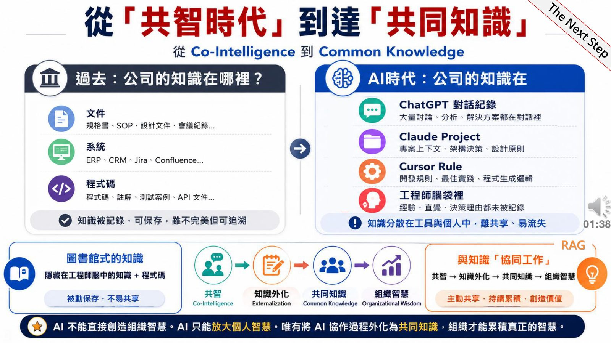
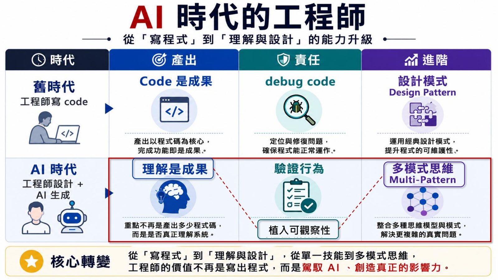
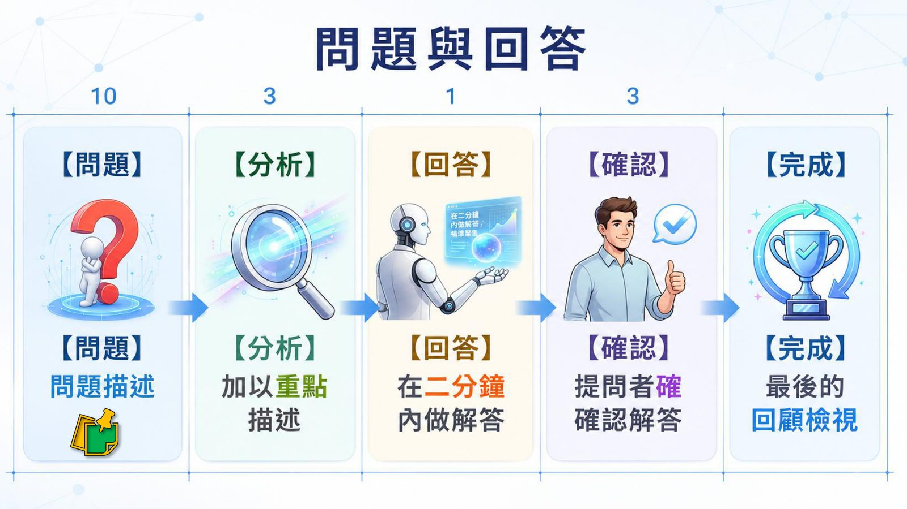

摘要
本場演講以 Ethan Mollick 的《Co-Intelligence》與 Steven Pinker 的《Common Knowledge》為理論基礎，探討 AI 讓每個人能力被放大後，組織要如何避免知識反而更加分散。講者提出「共智」需要進一步演化為「共同知識」，並提出理解債（Understanding Debt）與認知負荷等概念，說明 AI 時代工程師的角色如何從單純寫程式，轉變為建立人與 AI 共同知識、對系統理解負責的人。
重點整理
- 與 AI 協作的四原則：永遠邀請 AI 入局、人在迴路中、像對待人一樣對待 AI、假設這是最爛的 AI
- 提出共同知識四原則：共同理解、知識外化、共同可見、共同演化
- AI 時代工程師的產出從「Code 是成果」轉變為「理解是成果」，需具備多模式思維與可觀察性
- 定義「理解債」：當系統生成速度超過人類形成理解的速度時所累積的認知落差，會導致修改恐懼與 Review 形式化
- 以看板方法（WIP 限制、節奏 Takt time）作為多工管理框架，並用 Slow Down Points、Context Recovery Design 等機制償還理解債
重點圖片／架構圖




從共智到共同知識
講者指出共智（Co-Intelligence）指人類與 AI 深度融合、相互放大的認知能力，成為一種全新工作與生活範式；但更進一步需要達成「共同知識」——每個人都知道某件事，且知道別人也知道，如此無限延伸，才能形成觸發集體行動的公開共識。這個概念呼應敏捷開發中 Knowledge Sharing 的核心目標：加速知識流動，讓私人知識變成團隊知識。
人機協作與 Harness Engineering
傳統 Prompt 互動中，人與 AI 之間缺乏共同知識：人類不知道 AI 記住多少脈絡，AI 也不知道人類真正的意圖邊界，導致協作流於猜疑與反覆測試。講者提出 Harness Engineering，將認知心理學與組織管理學的洞察落地為軟體架構，工程師的工作變成設計與維護 AI 之外的協作環境（wrapper），而非只是檢視程式碼本身。
與 AI 協作的四原則與 HDD
引用 Ethan Mollick 的四項原則：永遠邀請 AI 入局、成為人在迴路中把關的人、像對待人一樣對待 AI 但要先定義它的角色、以及假設現在用的是最爛的 AI（因為未來會快速進步）。講者也提出 Hypothesis-Driven Development（HDD）架構，將 AI 的產出視為一種待驗證的假設，經過觀察、驗證後才能知識資產化，強調人類的判斷能力比撰寫能力更重要。
理解債與理解工程
當系統生成速度遠超人類理解速度時，就會累積「理解債」，其五種症狀包括無法解釋、Context Recovery 過慢、過度依賴特定人或 AI、Review 流於形式、以及修改恐懼。理解債的成因包含 AI 過度生成、多工切換、缺乏反思節奏、缺乏高階模型、以及 Human-on-the-loop 的黑箱化。解法是建立「理解流」，透過刻意減速點、要求 AI 解釋行為、共享理解與固定反思節奏，維持團隊在生成、理解、驗證與共享之間的認知同步。
認知負荷與 AI 時代的敏捷
DevOps 的目的是降低認知負荷，講者將負荷分為內在負荷（任務本身複雜度）、外在負荷（不必要的操作摩擦）與相關負荷（真正建構心智模型與學習的腦力），AI + DevOps 的價值就是大幅降低外在負荷、釋放空間給相關負荷。演講也借用看板方法的核心思想（視覺化工作、限制 WIP、管理價值流動）建立每日、每週、每月不同節奏的檢視機制，並提出 AI 時代的敏捷是一種學習系統：Agile 是學習能力、DevOps 是交付能力、Agentic development 則是生產能力。